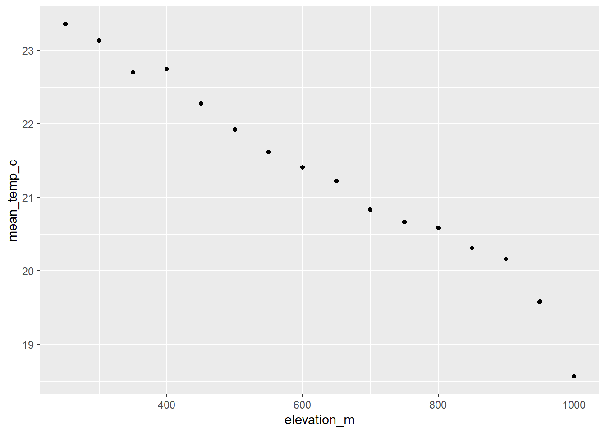
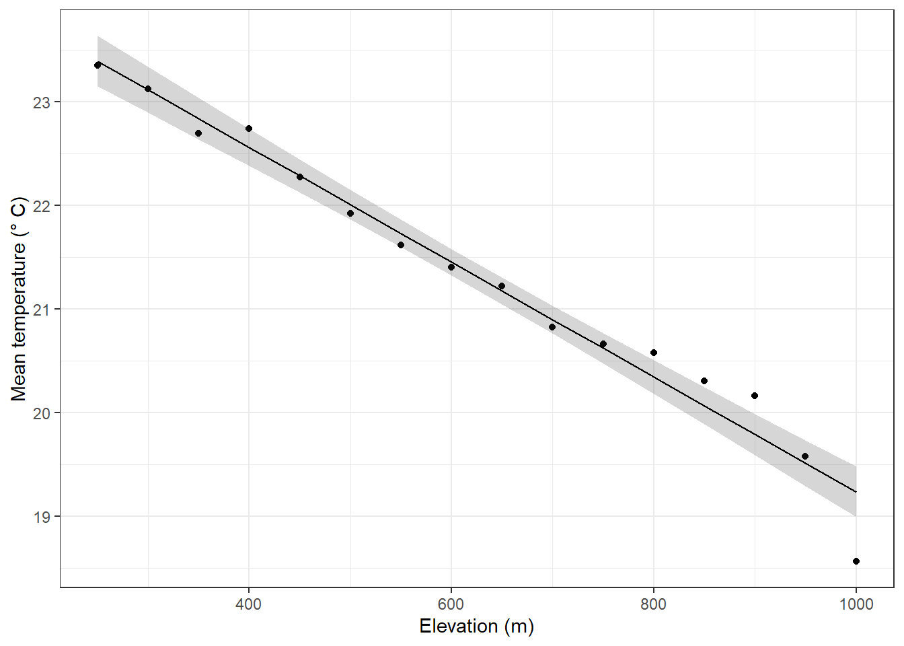

library(tidyverse) # general use
library(janitor) # cleaning data frames
library(here) # file/folder organization
library(ggeffects) # generating model predictions
library(gtsummary) # generating summary tables for models
# temperature data from Ramirez 2024
sonadora <- read_csv(here("data", "Temp_SonadoraGradient_Daily.csv"))Linear regression: Sonadora temperature and elevation example
Set up
Sonadora temperature example
Data from Ramirez, A. 2024. Sonadora elevational plots: long-term monitoring of air temperature ver 877108. Environmental Data Initiative. https://doi.org/10.6073/pasta/6b66eecae3092d8f2340b5132dec38ab (Accessed 2025-05-14).
a. Questions and hypotheses
Question: Does elevation (in meters) predict temperature (in °C)?
H0: Elevation (m) does not predict temperature (°C).
HA: Elevation (m) predicts temperature (°C).
b. Cleaning and summarizing
# creating new clean data frame
sonadora_clean <- sonadora |>
# clean column names
clean_names() |>
# make the data frame longer
pivot_longer(cols = plot_250:plot_1000,
names_to = "plot_name",
values_to = "temp_c") |>
# separate plot name from elevation
separate_wider_delim(cols = plot_name,
delim = "_",
names = c("plot", "elevation_m"),
cols_remove = FALSE) |>
# remove plot column
select(-plot) |>
# make sure elevation is read as a number
mutate(elevation_m = as.numeric(elevation_m))
# summarizing
sonadora_sum <- sonadora_clean |>
# group by plot and elevation
group_by(plot_name, elevation_m) |>
# calculate mean temperature at each elevation
summarize(mean_temp_c = mean(temp_c, na.rm = TRUE)) |>
# undo the group_by function
ungroup() |>
# arrange in order of elevation
arrange(elevation_m)c. Exploratory data visualization
# base layer: ggplot
ggplot(data = sonadora_sum,
aes(x = elevation_m,
y = mean_temp_c)) +
# first layer: points representing temperature at each elevation
geom_point()
d. Temperature model
# model
temperature_model <- lm(
mean_temp_c ~ elevation_m, # formula: response ~ predictor
data = sonadora_sum # data frame
)Diagnostics
# diagnostics
par(mfrow = c(2, 2))
plot(temperature_model)
Model summary
summary(temperature_model)
Call:
lm(formula = mean_temp_c ~ elevation_m, data = sonadora_sum)
Residuals:
Min 1Q Median 3Q Max
-0.67288 -0.07577 0.00022 0.09393 0.37042
Coefficients:
Estimate Std. Error t value Pr(>|t|)
(Intercept) 24.7807991 0.1719438 144.12 < 2e-16 ***
elevation_m -0.0055446 0.0002581 -21.48 4.08e-12 ***
---
Signif. codes: 0 '***' 0.001 '**' 0.01 '*' 0.05 '.' 0.1 ' ' 1
Residual standard error: 0.238 on 14 degrees of freedom
Multiple R-squared: 0.9706, Adjusted R-squared: 0.9684
F-statistic: 461.4 on 1 and 14 DF, p-value: 4.075e-12For each meter of elevation gain, you would expect a decrease in temperature equivalent to 0.01 ± 0.0003 (SE) °C.
Generating predictions
# model predictions
temperature_preds <- ggpredict(
temperature_model, # model object
terms = "elevation_m" # predictor (in quotation marks)
)
# calculate the temperature prediction at elevation = 900
ggpredict(
temperature_model, # model object
terms = "elevation_m[900]" # predictor (in quotation marks) and predictor value in brackets
)# Predicted values of mean_temp_c
elevation_m | Predicted | 95% CI
--------------------------------------
900 | 19.79 | 19.59, 19.99At 900 m, the predicted temperature is 19.8 °C (95% CI: [19.6, 20.0]).
Visualizing model predictions
# base layer
ggplot(data = sonadora_sum,
aes(x = elevation_m,
y = mean_temp_c)) +
# first layer: temperature at each elevation
geom_point() +
# 95% CI ribbon
# uses model prediction data frame
geom_ribbon(data = temperature_preds,
aes(x = x,
y = predicted,
ymin = conf.low,
ymax = conf.high),
alpha = 0.2) +
# model prediction line
# uses model prediction data frame
geom_line(data = temperature_preds,
aes(x = x,
y = predicted)) +
# axis labels
labs(x = "Elevation (m)",
y = "Mean temperature (\U00B0 C)") +
theme_bw()
Creating a table with model coefficients, 95% confidence intervals, and more
tbl_regression(temperature_model,
# make sure the y-intercept estimate is shown
intercept = TRUE,
# changing labels in "Characteristic" column
label = list(`(Intercept)` = "Intercept",
elevation_m = "Elevation (m)")) |>
# changing header text
modify_header(label = "**Variable**",
estimate = "**Estimate**") |>
# turning table into a flextable (makes things easier to render to word or PDF)
as_flex_table()Variable | Estimate | 95% CI | p-value |
|---|---|---|---|
Intercept | 25 | 24, 25 | <0.001 |
Elevation (m) | -0.01 | -0.01, 0.00 | <0.001 |
Abbreviation: CI = Confidence Interval | |||
END OF SONADORA EXAMPLE